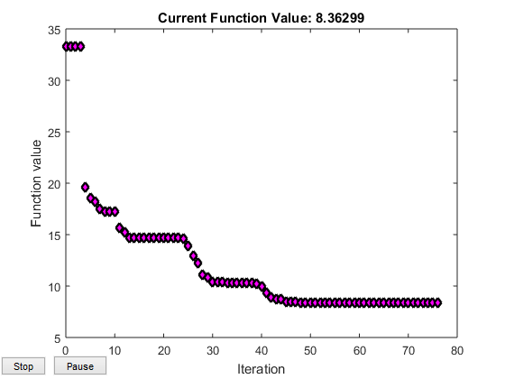
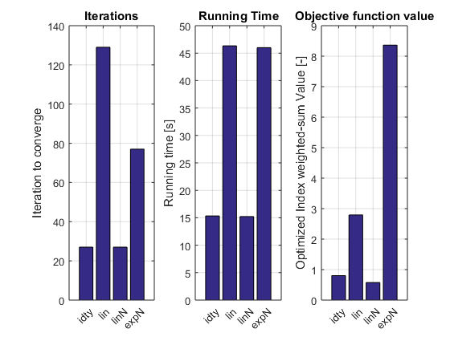
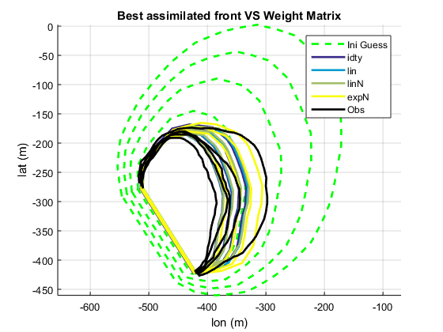

Contents
% Script to run SmartQFIRE_func optimizing all the invariants % %
WEIGHT COMPARATIVE SmartQFIRE RUN
This program runs a constrained optimization using the 4 defined Weight Matrix and compares their performance
- IDTY = Identity (no weight)
- LIN = liner
- LINN = linear normalized
- EXPN = exponantinal normalized
clear
SELECT INDEX TO OPTIMIZE
OptIndexStrng = 'Soersen_a'; % {'CostArea','SDI','Soersen','Jaccard','SDI_a','Soersen_a','Jaccard_a'};
inv_char={'Imwf[s/m]','I_Wo[]','U [m/s]','I_{\theta}[deg]'};
OptWeightStrng={'idty','lin','linN','expN'};
Invariants = nan(length(OptWeightStrng),length(inv_char));
filename = cell(1,length(OptWeightStrng));
CellI = cell(1,length(OptWeightStrng));
xy_model = cell(1,length(OptWeightStrng));
costVal = nan(1,length(OptWeightStrng));
runTime = nan(1,length(OptWeightStrng));
% figure('Name','Index Exploration') % FALLA MATLAB amb els Axes Handles
h=waitbar(0,'Running Muliple Index Optimization');
for i=1:length(OptWeightStrng)
waitbar(i/(length(OptWeightStrng)+1),h)
% ax1(i)=subplot(2,4,i);
% [I,filename{i}]=SmartQFIRE_func(OptIndexStrng{i},ax1(i));
tic
[I,filename{i},xy_model{i},xy_real,xy_ini_guess,costVal(i)]=SmartQFIRE_func(OptIndexStrng,OptWeightStrng{i}); % TO avoid ploting index exploration
runTime(i)=toc;
CellI{i}=I;
Invariants(i,:)=I(end,:);
end
close(h)
% PlotInvariantsBar(Invariants,inv_char,OptIndexStrng)
Local minimum possible. Constraints satisfied. fmincon stopped because the size of the current step is less than the default value of the step size tolerance and constraints are satisfied to within the default value of the constraint tolerance. Local minimum possible. Constraints satisfied. fmincon stopped because the size of the current step is less than the default value of the step size tolerance and constraints are satisfied to within the default value of the constraint tolerance. Local minimum possible. Constraints satisfied. fmincon stopped because the size of the current step is less than the default value of the step size tolerance and constraints are satisfied to within the default value of the constraint tolerance. Local minimum possible. Constraints satisfied. fmincon stopped because the size of the current step is less than the default value of the step size tolerance and constraints are satisfied to within the default value of the constraint tolerance.
Invariants Value at each optimization
figure('Name','BARPLOT') for i=1:length(inv_char) ax(i)=subplot(2,2,i); bar(ax(i),Invariants(:,i)) title(sprintf('%s',inv_char{i})) xlabel('Optimized Index') ylabel(sprintf('Value %s',inv_char{i})) % ax(i).XTickLabel =inv_char; ax(i).XTickLabel =OptWeightStrng; ax(i).XTickLabelRotation = 45; grid on end

Comparative Performance
figure('Name','Iterations') %aIt=axes; aIt1=subplot(1,3,1); iter=cellfun('length',CellI); bar(iter); ylabel('Iteration to converge') aIt1.XTickLabel =OptWeightStrng; aIt1.XTickLabelRotation = 45; grid on title('Iterations') aIt2=subplot(1,3,2); bar(runTime) ylabel('Running time [s]') aIt2.XTickLabel =OptWeightStrng; aIt2.XTickLabelRotation = 45; grid on title('Running Time') aIt3=subplot(1,3,3); bar(costVal) ylabel('Optimized Index weighted-sum Value [-]') aIt3.XTickLabel =OptWeightStrng; aIt3.XTickLabelRotation = 45; grid on title('Objective function value')
Optimazed fronts comparison
figure('Name','All Index Optimized Fronts') Hax=[]; Hax(1)=plot_fronts_cell(xy_ini_guess.xy,'hold','--g'); Cmap=parula(length(OptWeightStrng)); for i=1:length(OptWeightStrng) Hax(i+1)=plot_fronts_cell(xy_model{i}.xy,'hold',Cmap(i,:)); %color? end Hax(end+1)=plot_fronts_cell(xy_real,'hold','-k'); %legend(Hax,['Obs','Ini Guess', OptIndexStrng]) legend(Hax,{'Ini Guess', OptWeightStrng{:},'Obs'}) title('Best assimilated front VS Weight Matrix')